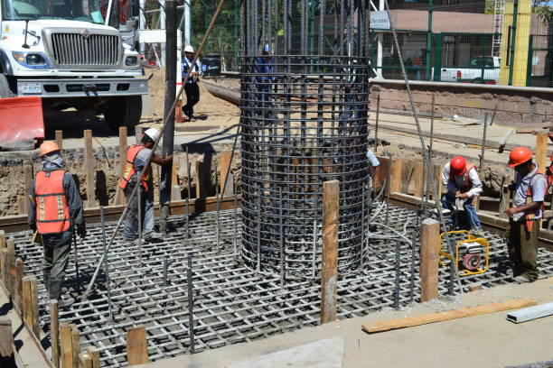

Footing in Civil Engineering
Footing is a critical component of any building’s foundation system. It distributes the loads from the superstructure to the underlying soil, ensuring the structure’s stability, safety, and durability.
What is a Footing?
A footing is a structural base that supports the foundation and transfers loads from columns or walls to the ground. It prevents soil failure by spreading the load over a wider area.
Purpose of Footing
- Load Transfer: Spreads structural loads to soil safely.
- Settlement Control: Reduces differential settlement.
- Structural Stability: Maintains overall balance of the structure.
- Foundation Support: Provides a solid base for columns and walls.
Types of Footings
- Isolated (Single) Footing: For one column; square or rectangular.
- Combined Footing: For two or more nearby columns.
- Strip Footing (Wall Footing): Long footing under a load-bearing wall.
- Raft or Mat Footing: Large slab supporting multiple columns on weak soil.
- Pile Footing: Transfers load to deep soil layers via piles.
Materials Used in Footing Construction
- Concrete: Reinforced or plain for strength and durability.
- Steel Reinforcement: Resists tensile forces in RCC footings.
- Brick or Stone: Used in low-load or traditional structures.
Design Considerations
- Soil Bearing Capacity: Determines the size of the footing.
- Superstructure Load: Includes dead and live loads.
- Depth of Footing: Below frost line and erosion level.
- Reinforcement Detailing: Prevents shear and bending failure.
- Drainage and Waterproofing: Protects from water damage.
Construction Steps
- Excavation of the foundation pit
- Laying the concrete bed
- Placing formwork and reinforcement
- Pouring concrete and curing
Importance of Footings
- Prevents structural failure and settlement
- Supports building under vertical and lateral loads
- Essential in seismic and wind-resistant design
- Ensures long-term durability
Conclusion
Footings